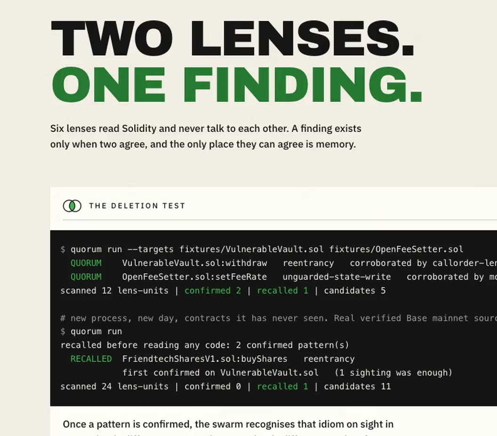

Two lenses. One finding.
Eight lenses read Solidity and never talk to each other. A finding exists only when two agree, and the only place they can agree is memory.
2confirmed
Measured against
- SmartBugs-curated, 143 files
- DeFiVulnLabs, 10 targets
- Slither 0.11.4
- GitHub Security tab

The deletion test
Memory onThe same eight lenses on the same two files, memory on and then memory off. Flip the switch to read what each run confirmed.
$ quorum run --targets fixtures/VulnerableVault.sol fixtures/OpenFeeSetter.sol QUORUM VulnerableVault.sol:withdraw reentrancy corroborated by callorder-lens, guard-lens QUORUM OpenFeeSetter.sol:setFeeRate unguarded-state-write corroborated by modifier-lens, sender-lens scanned 16 lens-units | confirmed 2 | recalled 1 | candidates 5
# same swarm, same contracts, memory removed $ quorum run --no-memory scanned 32 lens-units | confirmed 0 | recalled 0 | candidates 15 nothing was confirmed, recalled or suppressed: without memory the swarm cannot corroborate, recognise or forget.
The numbers
Measured. Every file kept.
Eight lenses over 143 contracts with known bugs, a second set of ten bugs they were never tuned on, and Slither run on the same files with the same rule. Each panel links to the file that produced it.
Right when it flags
reentrancy69%
Of the flags Quorum raises for the most common bug, on 143 contracts with known bugs, this many are right.
The fileBugs found
seven runs1%63%
first runseventh run
Recall on the same 143 contracts, from the hackathon build to today. Every before-file is in the repo.
The fileAgainst Slither
| Measure | Quorum | Slither |
|---|---|---|
| Reentrancy, flags right | 69% | 62% |
| Access control, found | 5% | 33% |
| Arithmetic, found | 76% | 0% |
Same files, same rule. The row Slither wins stays on the page.
The fileMIT licensed. Memory is a local file; nothing is uploaded. Code